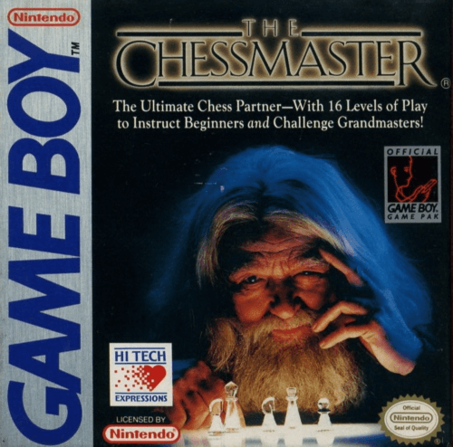
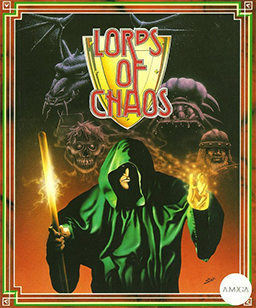

Mejores titulos de estrategia de los 90
The chessmaster
Chessmaster el gran clásico de los juegos de ajedrez en consolas y PCs es un juego que siempre ha apostado por la sencillez y por incorporar el mayor número de opciones posibles para los amantes del milenario juego de estrategia.
Lord of chaos
El tatarabuelo de X-Com, uno de los primeros juegos de estrategia táctica de los hermanos Gollop, lanzado a continuación de Laser Squad. En este título hasta cuatro jugadores pueden crear sus propios magos y lanzarse en un combate a muerte usando hechizos de diferentes escuelas para conseguir el dominio del preciado manna.